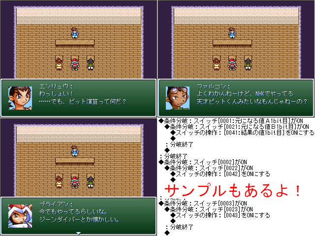

| No.65 | 三馬鹿と軽く学ぶビット演算 |
 |
|
| 提出済 6.5KB 最終更新：05/04 感想掲示板 | |
| 作者 | 中の外の人 |
| ジャンル | プチ講座 |
| ツクール | 2000 |
| 配信／投稿 | どうぞどうぞ |
| 作者コメント | |
|
祭りと聞いてギリギリ飛び入り参加させてもらいました。 去年の紅白は未提出に終わりましたが今回は即興でtkってみました。 眠い目をこすって組み立てたサンプルプログラムも見ながらぜひPIAIしてください | |
| 管理人コメント | |
| グラモンバトルが好きだったんだけど天才ビット君であってるかな | |
←前の作品 トップ 次の作品→